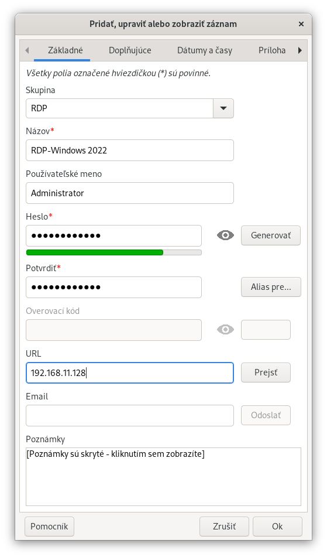
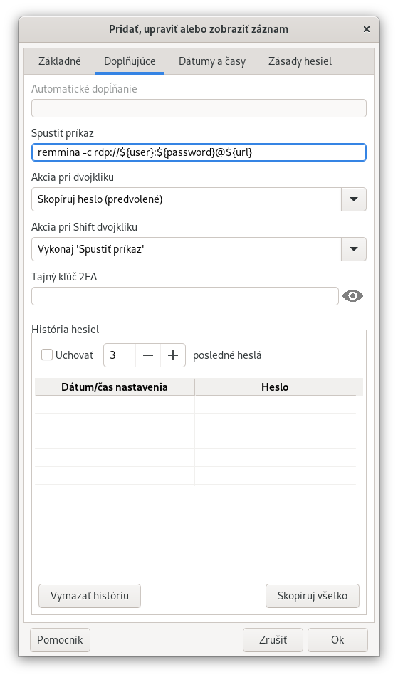
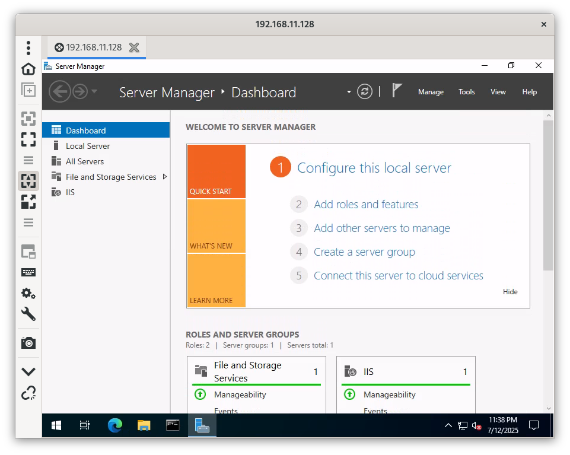

Pole 'Spustiť príkaz' záznamu môže obsahovať príkaz, ktorý sa spustí po výbere akcie Spustiť príkaz. Tu je v podstate možné použiť čokoľvek, čo môžete urobiť v okne 'Spustenie príkazu' v Linuxe.
Navyše, Password Safe je schopný odovzdať príkazu argumenty, ako napríklad používateľské meno, heslo atď., ako je popísané nižšie. To vám umožňuje "naprogramovať/zautomatizovať" pomerne zložité akcie, ako je spustenie programu vzdialeného prístupu cez SSH/RDP/VNC (napríklad Remmina na Linuxe) a odovzdať mu používateľské meno, heslo a cieľovú adresu spojené so záznamom.
${autotype}(\p\n)"/usr/bin/pwsafe" /home/ja/Dokumenty/mysafes/test.psafe3
remmina -c rdp://${user}:${password}@${url}
 

Vo všeobecnosti sa 'premenné' pred odovzdaním na vykonanie nahrádzajú hodnotami, ktoré sú s nimi spojené. Na označenie premennej sa používa znak dolára ("$").
| appdir | Priečinok obsahujúci aplikáciu Password Safe. Pozri poznámky 1 a 2 nižšie. |
| dbdir | Priečinok aktuálne otvorenej databázy. Pozri poznámky 1 a 2 nižšie. |
| fulldb | Úplná cesta, názov súboru a prípona aktuálne otvorenej databázy. Pozri poznámku 2 nižšie. |
| dbname | Názov aktuálne otvoreného súboru databázy. |
| dbextn | Prípona aktuálne otvorenej databázy. |
| g alebo group | Skupina (úplná stromová štruktúra od koreňa so skupinami oddelenými bodkami) |
| G alebo GROUP | Skupina obsahujúca tento záznam |
| t alebo title | Názov |
| u alebo user | Používateľské meno |
| p alebo password | Heslo |
| e alebo email | |
| a alebo autotype | AutoType. Pozri poznámku 5 nižšie. |
| url | URL adresa |
| n or n[0] | Úplné pole Poznámky (taktiež: notes alebo notes[0]). Pozri poznámku 3 nižšie. |
| n[i] alebo notes[i] | ntý riadok poľa Poznámky počítaný od začiatku, t.j. i=1 je prvý riadok, i=2 znamená druhý riadok atď. Pozri poznámku 4 nižšie. |
| n[-i] alebo notes[-i] | ntý riadok poľa Poznámky počítaný od konca, t.j. i=1 je posledný riadok, i=2 znamená predposledný riadok atď. Pozri poznámku 4 nižšie. |
Poznámka: V prípade potreby nezabudnite okolo reťazca pridať úvodzovky, napr. ak priečinok databázy obsahuje medzery, na prístup k textovému súboru v ňom budete potrebovať nasledovné (s úvodzovkami):
"$dbdir\/$dbname.txt"
Všimnite si že lomítko medzi priečinkom a súborom je escapované spätným lomítkom, aby sa '$dbname' rozpoznalo ako premenná.